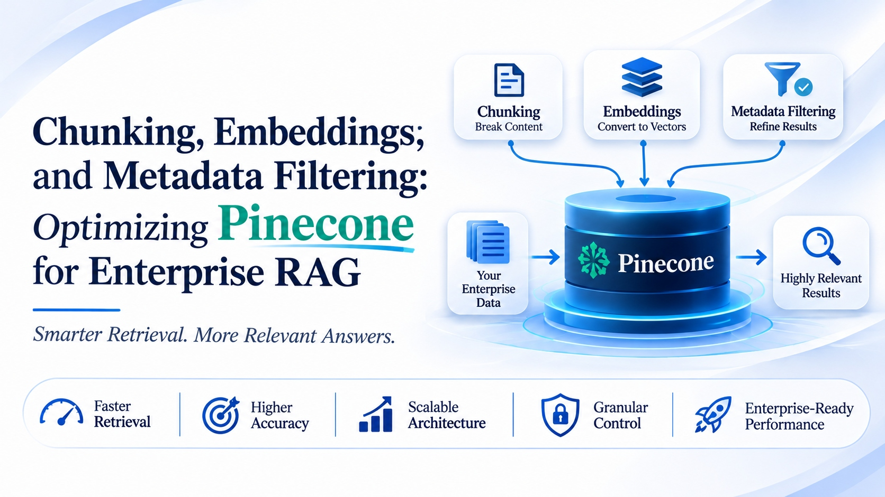

Chunking, Embeddings, and Metadata Filtering: Optimizing Pinecone for Enterprise RAG

When an enterprise RAG system gives a poor answer, the language model usually gets the blame. In most cases the real cause sits earlier, in how documents were split, how they were embedded, and whether the right filters narrowed the search. Get those three right, and the model has far better material to work with.
Why Retrieval Comes First
A RAG answer can only be as good as the passages retrieved for it. If the right passage never reaches the prompt, no amount of prompt tuning will fix the result. Retrieval tuning is also cheaper and more measurable than model tuning, which makes it the best place to start.
Teams building at scale often treat the whole path from ingestion to answer as one system, which is where Pinecone and LangChain RAG orchestration comes in: the index stores and searches vectors, and the orchestration layer controls how documents are split, embedded, filtered, and passed to the model.
Chunking
A chunk is the unit of retrieval. Make it too large and it carries several topics, which blurs the match. Make it too small and it loses the context that gives it meaning.
Overlap keeps ideas that cross a boundary intact in at least one chunk.
- Split on structure first. Respect headings, paragraphs, tables, and list items before falling back to a fixed size.
- Add modest overlap. A small overlap protects sentences that straddle a boundary.
- Keep tables and code whole. Cutting a table in half destroys its meaning.
- Carry context into each chunk. Prepend the document title and section heading so the chunk makes sense alone.
- Tune by testing. The best size depends on your documents and questions, so compare a few settings on a fixed test set.
Embeddings
The embedding model decides what "similar" means. A model that suits general text may struggle with legal clauses, product codes, or medical terms.
- Match the model to the domain. Test candidates on your own questions, not only on public benchmarks.
- Use the same model for indexing and querying. Mixing models produces vectors that cannot be compared.
- Match the index to the model. The index dimension and distance metric must fit the embedding model you choose.
- Version your embeddings. Record the model name and version in metadata so you know what to re-embed after a change.
- Plan for re-embedding. Changing models means rebuilding the index, so keep source text and a repeatable pipeline.
- Consider hybrid search. Combining semantic and keyword signals often helps with exact terms such as part numbers.
Metadata Filtering
Metadata lets you narrow the search before similarity ranking, so the model only sees passages the user should see and that fit the question. It is also your main tool for access control inside the retrieval step.
query:
vector: [ ...embedding of the question... ]
top_k: 8
namespace: "acme-corp"
filter:
doc_type: { "$in": ["policy", "contract"] }
access_level: { "$lte": 2 }
year: { "$gte": 2024 }| Metadata field | Why it helps |
|---|---|
| tenant or business unit | Keeps one customer's data out of another's results |
| access level or role | Enforces permissions during retrieval, not after |
| document type | Lets a query target policies, contracts, or manuals |
| date or version | Prefers current content and avoids outdated answers |
| source and document id | Supports citations, updates, and deletes |
| embedding model version | Tracks which vectors need re-embedding |
Keep metadata lean and use fields you actually filter on. Metadata has size limits and affects storage and speed, so confirm the current limits in the Pinecone documentation.
Namespaces and Tenancy
Namespaces partition an index, which makes them a natural fit for tenant isolation and for separating environments or data classes. A query can target a single namespace, so one tenant's search never touches another's vectors.
- One namespace per tenant, or per tenant and data class
- Separate namespaces or indexes for test and production data
- Filters still applied inside a namespace for roles and document types
- A documented process for deleting a tenant's data on request
Measuring Retrieval Quality
Tuning without measurement is guessing. Build a golden set of real questions, each paired with the passages that should be retrieved, and score every change against it.
| Measure | What it tells you |
|---|---|
| Recall at k | Whether the right passage appears in the top results |
| Precision at k | How much of the retrieved text is actually relevant |
| Rank of first hit | How early the useful passage arrives |
| Filter correctness | Whether restricted content ever leaks into results |
| Latency and cost | Whether quality gains are affordable at scale |
A reranking step on the top results can raise precision further. Test it on the same golden set to confirm the gain is worth the added latency.
Operating the Index
- Use stable ids. Derive vector ids from document id and chunk position so repeated ingestion updates records instead of duplicating them.
- Handle updates and deletes. When a document changes, remove its old chunks, then insert the new ones.
- Batch your writes. Upsert in batches and retry safely.
- Watch freshness. Track how long it takes for a new document to become searchable.
- Monitor drift. Re-run the golden set on a schedule to catch quality changes early.
FAQs
What is the best chunk size for enterprise RAG?
There is no single best size. It depends on your documents and questions, so test a few sizes with modest overlap against a fixed set of real questions.
Why must queries and documents use the same embedding model?
Vectors from different models live in different spaces, so their distances are not meaningful when compared.
What should go into metadata?
Fields you filter or cite on, such as tenant, access level, document type, date, source, and embedding model version. Avoid storing large text blobs there.
Should we use one namespace per tenant?
It is a common and effective pattern for isolation. Confirm limits and behavior in the current Pinecone documentation for your plan.
How do we know if retrieval is improving?
Score every change against a golden set using recall, precision, and rank of the first relevant result, alongside latency and cost.
Conclusion
Strong enterprise RAG is built in the retrieval layer. Split documents along their natural structure, choose and version embeddings deliberately, filter with clean metadata, isolate tenants, and measure everything against a golden set. Do that, and the language model finally has the right evidence to answer from.